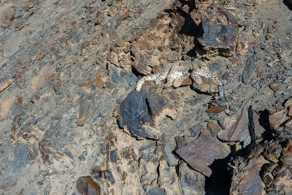
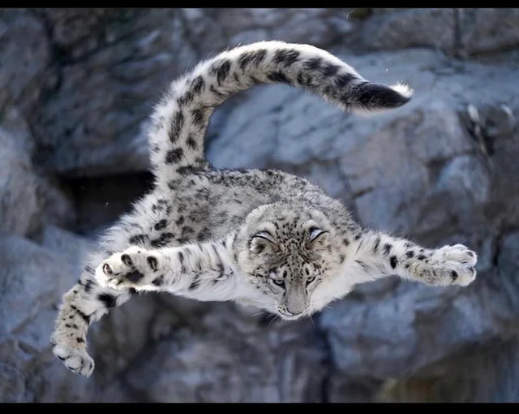

O Fantasma das Montanhas
O leopardo-das-neves (Panthera uncia) é um felino nativo das cadeias montanhosas da Ásia Central e do Sul. Conhecido por sua natureza solitária e furtiva, ele é um dos animais mais misteriosos do planeta.

Mestre da Camuflagem
Sua pelagem cinza com rosetas pretas o torna quase invisível entre as rochas e o gelo.

Saltador Incrível
Capaz de saltar até 15 metros, ele persegue presas em penhascos íngremes com facilidade.
Cauda Protetora
Usa sua cauda longa para equilíbrio e para se aquecer durante o sono em temperaturas abaixo de zero.
Estima-se que restem menos de 6.500 leopardos na natureza. A proteção de seu habitat é crucial para que esse "fantasma" não desapareça para sempre.